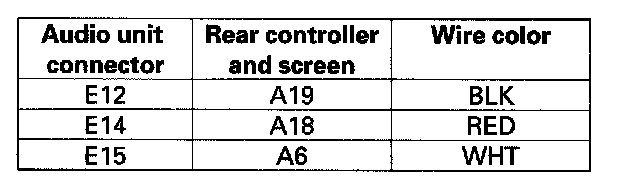

Wireless headphone sound is weak, sound distorted, there is static, volume does not change, or there is no sound in all modes
Wireless headphone sound is weak, sound distorted, there is static, volume does not change, or there is no sound in all modesNOTE: Check battery condition first.
1. Substitute a known-good wireless headphone and recheck.
Does the symptom go away?
YES - Replace the original wireless headphones.
NO - Go to step 2.
2. Check the lens on the rear edge of the rear screen for dirt or damage.
Does the rear screen appear to be in good condition?
YES - Go to step 3.
NO - Substitute a known-good rear controller and screen and recheck.
3. Substitute a known-good audio unit and recheck.
Does the symptom go away?
YES - Replace the original audio unit.
NO - Go to step 4.
4. Disconnect the audio unit connector E (16P), and the rear controller and screen connector A (24P).
5. Check for continuity between audio unit connector E (16P) and body ground according to the table. Then check the same terminals for continuity to the harness shield terminal E13.
Is there continuity?
YES - Short in the wire between the audio unit and the rear controller and screen. Replace the appropriate shielded harness.
NO - Go to step 6.

6. Check for continuity between the audio unit connector E (16P) and rear controller and screen connector A (24P) according to the table.
Is there continuity?
YES - Rear controller and screen faulty.
NO - Repair open in the wire between the audio unit and rear controller and screen.